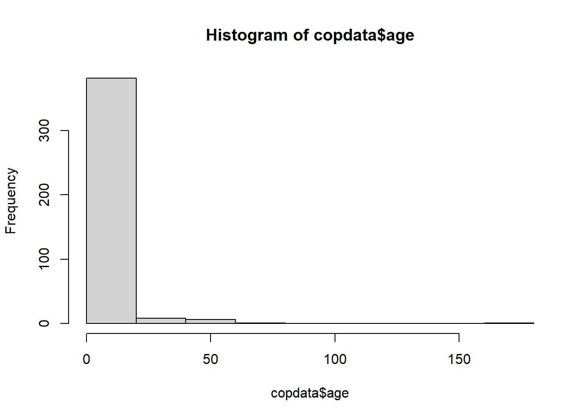

# Check if the 'pacman' package is installed, if not install it:
if (!requireNamespace("pacman", quietly = TRUE)) install.packages("pacman")
# Load the required libraries into the current R session:
pacman::p_load(rio,
here,
tidyverse,
skimr,
plyr,
janitor,
lubridate,
gtsummary,
flextable,
officer,
epikit,
apyramid,
scales)Data import and cleaning - Inj09
1. Install packages and load libraries
2. Import your data
# Import the raw data set:
copdata <- rio::import(here::here("data", "Copenhagen_raw.csv"))3. Explore and clean your data
head(copdata) id sex age group class diarrhoea bloody vomiting abdo nausea fever
1 1 male 18 1 2 1 0 0 1 0 NA
2 3 female 18 1 3 NA NA NA NA NA NA
3 5 female 17 1 1 NA NA NA 1 1 NA
4 6 male 17 1 2 NA NA NA NA NA NA
5 7 female 18 1 3 1 0 0 1 1 0
6 8 male 180 1 2 1 0 0 1 0 0
headache jointpain starthour meal tuna tunaD shrimps shrimpsD green greenD
1 0 0 9 1 1 2 1 2 0 0
2 NA NA NA 1 0 0 0 0 0 0
3 1 NA NA 1 NA NA NA NA NA NA
4 NA NA NA 0 0 0 0 0 0 0
5 1 0 15 1 1 2 1 2 1 2
6 0 0 15 1 1 2 1 2 1 2
veal vealD pasta pastaD rocket rocketD sauce sauceD bread breadD champagne
1 1 2 1 3 1 1 1 2 1 2 1
2 1 1 1 3 1 3 1 3 1 3 1
3 1 0 1 1 NA NA NA NA 1 1 0
4 1 0 0 0 0 0 0 0 0 0 1
5 1 2 1 2 1 2 1 2 1 2 1
6 1 2 1 2 1 2 1 2 1 2 1
champagneD beer beerD redwine redwineD whitewine whitewineD dayonset
1 1 1 3 0 0 0 0 12nov2006
2 1 0 0 1 3 0 0
3 0 0 0 0 0 0 0
4 3 1 3 1 3 1 3
5 1 1 2 0 0 1 3 12nov2006
6 1 1 3 0 0 1 2 13nov2006dim(copdata)[1] 397 40str(copdata)'data.frame': 397 obs. of 40 variables:
$ id : int 1 3 5 6 7 8 9 10 11 12 ...
$ sex : chr "male" "female" "female" "male" ...
$ age : int 18 18 17 17 18 180 16 15 43 16 ...
$ group : int 1 1 1 1 1 1 0 1 0 1 ...
$ class : int 2 3 1 2 3 2 NA 1 NA 1 ...
$ diarrhoea : int 1 NA NA NA 1 1 NA 0 1 NA ...
$ bloody : int 0 NA NA NA 0 0 NA 0 NA NA ...
$ vomiting : int 0 NA NA NA 0 0 NA 0 NA NA ...
$ abdo : int 1 NA 1 NA 1 1 NA 0 NA NA ...
$ nausea : int 0 NA 1 NA 1 0 NA 1 1 NA ...
$ fever : int NA NA NA NA 0 0 NA 0 NA NA ...
$ headache : int 0 NA 1 NA 1 0 NA 1 1 NA ...
$ jointpain : int 0 NA NA NA 0 0 NA 0 1 NA ...
$ starthour : int 9 NA NA NA 15 15 NA NA 3 NA ...
$ meal : int 1 1 1 0 1 1 1 1 1 1 ...
$ tuna : int 1 0 NA 0 1 1 1 1 1 1 ...
$ tunaD : int 2 0 NA 0 2 2 2 1 2 2 ...
$ shrimps : int 1 0 NA 0 1 1 1 0 1 1 ...
$ shrimpsD : int 2 0 NA 0 2 2 2 0 2 2 ...
$ green : int 0 0 NA 0 1 1 1 0 NA 1 ...
$ greenD : int 0 0 NA 0 2 2 2 0 NA 2 ...
$ veal : int 1 1 1 1 1 1 1 1 1 1 ...
$ vealD : int 2 1 0 0 2 2 1 3 2 2 ...
$ pasta : int 1 1 1 0 1 1 1 1 1 1 ...
$ pastaD : int 3 3 1 0 2 2 2 3 2 3 ...
$ rocket : int 1 1 NA 0 1 1 1 1 1 1 ...
$ rocketD : int 1 3 NA 0 2 2 2 2 2 2 ...
$ sauce : int 1 1 NA 0 1 1 0 1 NA NA ...
$ sauceD : int 2 3 NA 0 2 2 0 1 NA NA ...
$ bread : int 1 1 1 0 1 1 1 1 1 1 ...
$ breadD : int 2 3 1 0 2 2 2 2 2 2 ...
$ champagne : int 1 1 0 1 1 1 1 1 1 1 ...
$ champagneD: int 1 1 0 3 1 1 2 1 1 1 ...
$ beer : int 1 0 0 1 1 1 NA 1 NA 1 ...
$ beerD : int 3 0 0 3 2 3 NA 1 NA 2 ...
$ redwine : int 0 1 0 1 0 0 1 0 1 0 ...
$ redwineD : int 0 3 0 3 0 0 2 0 2 0 ...
$ whitewine : int 0 0 0 1 1 1 1 1 NA 0 ...
$ whitewineD: int 0 0 0 3 3 2 1 3 NA 0 ...
$ dayonset : chr "12nov2006" "" "" "" ...skimr::skim(copdata)| Name | copdata |
| Number of rows | 397 |
| Number of columns | 40 |
| _______________________ | |
| Column type frequency: | |
| character | 2 |
| numeric | 38 |
| ________________________ | |
| Group variables | None |
Variable type: character
| skim_variable | n_missing | complete_rate | min | max | empty | n_unique | whitespace |
|---|---|---|---|---|---|---|---|
| sex | 0 | 1 | 4 | 6 | 0 | 2 | 0 |
| dayonset | 0 | 1 | 0 | 9 | 175 | 4 | 0 |
Variable type: numeric
| skim_variable | n_missing | complete_rate | mean | sd | p0 | p25 | p50 | p75 | p100 | hist |
|---|---|---|---|---|---|---|---|---|---|---|
| id | 0 | 1.00 | 216.55 | 123.41 | 1 | 112 | 216 | 320 | 435 | ▇▇▇▇▇ |
| age | 0 | 1.00 | 18.57 | 9.92 | 8 | 16 | 17 | 18 | 180 | ▇▁▁▁▁ |
| group | 0 | 1.00 | 0.96 | 0.20 | 0 | 1 | 1 | 1 | 1 | ▁▁▁▁▇ |
| class | 36 | 0.91 | 1.94 | 0.84 | 1 | 1 | 2 | 3 | 3 | ▇▁▆▁▇ |
| diarrhoea | 141 | 0.64 | 0.82 | 0.39 | 0 | 1 | 1 | 1 | 1 | ▂▁▁▁▇ |
| bloody | 200 | 0.50 | 0.03 | 0.17 | 0 | 0 | 0 | 0 | 1 | ▇▁▁▁▁ |
| vomiting | 179 | 0.55 | 0.30 | 0.46 | 0 | 0 | 0 | 1 | 1 | ▇▁▁▁▃ |
| abdo | 152 | 0.62 | 0.85 | 0.35 | 0 | 1 | 1 | 1 | 1 | ▂▁▁▁▇ |
| nausea | 170 | 0.57 | 0.76 | 0.43 | 0 | 1 | 1 | 1 | 1 | ▂▁▁▁▇ |
| fever | 223 | 0.44 | 0.26 | 0.44 | 0 | 0 | 0 | 1 | 1 | ▇▁▁▁▃ |
| headache | 174 | 0.56 | 0.63 | 0.48 | 0 | 0 | 1 | 1 | 1 | ▅▁▁▁▇ |
| jointpain | 207 | 0.48 | 0.16 | 0.37 | 0 | 0 | 0 | 0 | 1 | ▇▁▁▁▂ |
| starthour | 177 | 0.55 | 12.49 | 4.92 | 3 | 9 | 9 | 15 | 21 | ▁▇▁▆▃ |
| meal | 9 | 0.98 | 0.97 | 0.17 | 0 | 1 | 1 | 1 | 1 | ▁▁▁▁▇ |
| tuna | 16 | 0.96 | 0.71 | 0.45 | 0 | 0 | 1 | 1 | 1 | ▃▁▁▁▇ |
| tunaD | 16 | 0.96 | 1.32 | 1.00 | 0 | 0 | 2 | 2 | 3 | ▆▅▁▇▂ |
| shrimps | 17 | 0.96 | 0.67 | 0.47 | 0 | 0 | 1 | 1 | 1 | ▃▁▁▁▇ |
| shrimpsD | 17 | 0.96 | 1.34 | 1.04 | 0 | 0 | 2 | 2 | 3 | ▆▂▁▇▂ |
| green | 30 | 0.92 | 0.59 | 0.49 | 0 | 0 | 1 | 1 | 1 | ▆▁▁▁▇ |
| greenD | 30 | 0.92 | 1.14 | 1.05 | 0 | 0 | 1 | 2 | 3 | ▇▂▁▇▂ |
| veal | 15 | 0.96 | 0.89 | 0.31 | 0 | 1 | 1 | 1 | 1 | ▁▁▁▁▇ |
| vealD | 14 | 0.96 | 1.83 | 0.91 | 0 | 1 | 2 | 2 | 3 | ▂▃▁▇▃ |
| pasta | 15 | 0.96 | 0.88 | 0.32 | 0 | 1 | 1 | 1 | 1 | ▁▁▁▁▇ |
| pastaD | 15 | 0.96 | 1.81 | 0.91 | 0 | 1 | 2 | 2 | 3 | ▂▃▁▇▃ |
| rocket | 24 | 0.94 | 0.57 | 0.50 | 0 | 0 | 1 | 1 | 1 | ▆▁▁▁▇ |
| rocketD | 24 | 0.94 | 1.08 | 1.06 | 0 | 0 | 1 | 2 | 3 | ▇▂▁▆▂ |
| sauce | 42 | 0.89 | 0.42 | 0.49 | 0 | 0 | 0 | 1 | 1 | ▇▁▁▁▆ |
| sauceD | 42 | 0.89 | 0.83 | 1.06 | 0 | 0 | 0 | 2 | 3 | ▇▁▁▃▁ |
| bread | 18 | 0.95 | 0.91 | 0.29 | 0 | 1 | 1 | 1 | 1 | ▁▁▁▁▇ |
| breadD | 18 | 0.95 | 1.75 | 0.71 | 0 | 2 | 2 | 2 | 3 | ▁▂▁▇▁ |
| champagne | 25 | 0.94 | 0.87 | 0.34 | 0 | 1 | 1 | 1 | 1 | ▁▁▁▁▇ |
| champagneD | 25 | 0.94 | 1.37 | 0.93 | 0 | 1 | 1 | 2 | 3 | ▂▇▁▂▃ |
| beer | 30 | 0.92 | 0.78 | 0.42 | 0 | 1 | 1 | 1 | 1 | ▂▁▁▁▇ |
| beerD | 35 | 0.91 | 1.94 | 1.23 | 0 | 1 | 3 | 3 | 3 | ▃▂▁▂▇ |
| redwine | 50 | 0.87 | 0.23 | 0.42 | 0 | 0 | 0 | 0 | 1 | ▇▁▁▁▂ |
| redwineD | 52 | 0.87 | 0.45 | 0.92 | 0 | 0 | 0 | 0 | 3 | ▇▁▁▁▁ |
| whitewine | 31 | 0.92 | 0.73 | 0.45 | 0 | 0 | 1 | 1 | 1 | ▃▁▁▁▇ |
| whitewineD | 36 | 0.91 | 1.58 | 1.21 | 0 | 0 | 2 | 3 | 3 | ▆▅▁▅▇ |
names(copdata) [1] "id" "sex" "age" "group" "class"
[6] "diarrhoea" "bloody" "vomiting" "abdo" "nausea"
[11] "fever" "headache" "jointpain" "starthour" "meal"
[16] "tuna" "tunaD" "shrimps" "shrimpsD" "green"
[21] "greenD" "veal" "vealD" "pasta" "pastaD"
[26] "rocket" "rocketD" "sauce" "sauceD" "bread"
[31] "breadD" "champagne" "champagneD" "beer" "beerD"
[36] "redwine" "redwineD" "whitewine" "whitewineD" "dayonset" Let’s explore and manage some variables in detail.
Age
Through visual exploration of the age histogram we see that there is at least one very high value, likely implausible. You can then create a cross-tabulation of variables age and group to have a better idea of how your data looks like.
# Have a look at the histogram
hist(copdata$age) 
# Create cross-tab with the group variable:
janitor::tabyl(dat = copdata,
var1 = age,
var2 = group) age 0 1
8 0 1
15 0 11
16 1 99
17 0 115
18 0 112
19 0 39
20 0 3
26 1 0
29 1 0
30 1 0
31 1 0
32 1 0
33 1 0
34 1 0
39 1 0
43 1 0
54 1 0
56 1 0
58 2 0
59 1 0
65 1 0
180 0 1Note that group is coded as 0 and 1, and these may be difficult to interpret when they mean something other than “no” and “yes”, respectively. From the codebook, you know that teachers are represented by 0, and students by 1. Let’s change this to make our lives easier:
# Convert group to a factor and label 0 as teacher, 1 as student:
copdata <- copdata %>%
mutate(group = factor(group,
labels = c("teacher", "student")))Now, have a look at your cross-tab again:
janitor::tabyl(dat = copdata,
var1 = age,
var2 = group) age teacher student
8 0 1
15 0 11
16 1 99
17 0 115
18 0 112
19 0 39
20 0 3
26 1 0
29 1 0
30 1 0
31 1 0
32 1 0
33 1 0
34 1 0
39 1 0
43 1 0
54 1 0
56 1 0
58 2 0
59 1 0
65 1 0
180 0 1With this table, we can more easily identify ages that are likely to be typographic errors. Specifically:
There is one teacher aged 16 (likely digit reversal - should be 61)
There is one student aged 8 (likely missing a digit - should be 18)
There is one student aged 180 (likely has an extra digit - should be 18)
Assuming you have contacted the school to make sure your suspicions about the actual ages are correct, we can now correct them, using case_when(). We create logical conditions to identify the incorrect ages, combining the values for age with the group they belong to:
# Update incorrect ages to the correct values with case_when:
copdata <- copdata %>%
mutate(age =
case_when(
# Where respondent is 16 and a teacher, change age to 61:
age == 16 & group == "teacher" ~ 61,
# where respondent is 8 or 180 and a student, change age to 18:
age == 8 & group == "student" ~ 18,
age == 180 & group == "student" ~ 18,
# Keep remaining values as is:
.default = as.numeric(age)
# if .default is not working, try:
# TRUE ~ age
)
) Dose response
Now let’s create a summary table of the dose response columns.
#| label: check_dose_cols
#| tbl-cap: no caption
# Create summary table for dose response columns:
drtable <- copdata %>%
# Select all the columns with column names that end in upper case 'D':
select(ends_with("D", ignore.case = FALSE)) %>%
# Create the summary table, excluding missing values:
gtsummary::tbl_summary(missing = "no")
# Print the summary table:
drtable| Characteristic | N = 3971 |
|---|---|
| tunaD | |
| 0 | 110 (29%) |
| 1 | 78 (20%) |
| 2 | 155 (41%) |
| 3 | 38 (10.0%) |
| shrimpsD | |
| 0 | 125 (33%) |
| 1 | 35 (9.2%) |
| 2 | 184 (48%) |
| 3 | 36 (9.5%) |
| greenD | |
| 0 | 151 (41%) |
| 1 | 41 (11%) |
| 2 | 147 (40%) |
| 3 | 28 (7.6%) |
| vealD | |
| 0 | 42 (11%) |
| 1 | 70 (18%) |
| 2 | 184 (48%) |
| 3 | 87 (23%) |
| pastaD | |
| 0 | 44 (12%) |
| 1 | 70 (18%) |
| 2 | 183 (48%) |
| 3 | 85 (22%) |
| rocketD | |
| 0 | 162 (43%) |
| 1 | 52 (14%) |
| 2 | 126 (34%) |
| 3 | 33 (8.8%) |
| sauceD | |
| 0 | 206 (58%) |
| 1 | 33 (9.3%) |
| 2 | 87 (25%) |
| 3 | 29 (8.2%) |
| breadD | |
| 0 | 35 (9.2%) |
| 1 | 51 (13%) |
| 2 | 267 (70%) |
| 3 | 26 (6.9%) |
| champagneD | |
| 0 | 49 (13%) |
| 1 | 208 (56%) |
| 2 | 45 (12%) |
| 3 | 70 (19%) |
| beerD | |
| 0 | 81 (22%) |
| 1 | 41 (11%) |
| 2 | 57 (16%) |
| 3 | 183 (51%) |
| redwineD | |
| 0 | 266 (77%) |
| 1 | 31 (9.0%) |
| 2 | 21 (6.1%) |
| 3 | 27 (7.8%) |
| whitewineD | |
| 0 | 100 (28%) |
| 1 | 73 (20%) |
| 2 | 67 (19%) |
| 3 | 121 (34%) |
| 1 n (%) | |
4. Modify variables format
We want to modify the “variable format” or “column type” of many variables, so that we can do future calculations with them in the following injects (some functions will need a specific “type” of input).
| Variable name | Original | Desired | Hint |
|---|---|---|---|
| sex | character | factor | mutate(), as.factor() |
| class | integer | factor | mutate(), as.factor() |
| All the clinical symptom variables | integer | logical | mutate(across()), as.logical() |
| All the food variables representing the amount of specific foods eaten (those finishing with a capital “D”) | integer | factor | mutate(across()), as.factor() |
| dayonset | character | date | lubridate::dmy() |
| starthour and dayonset together | integer (starthour) date (dayonset) |
POSIXct, POSIXt | lubridate::ymd_h() could have inside stringr::str_glue() with dayonset and starthour |
Sex, group and class
Let’s start transforming one-by-one the first two variables in the table: sex, and class.
copdata <- copdata %>%
dplyr::mutate(
sex = as.factor(sex),
class = as.factor(class))Symptoms and Food variables
For these variables, we are going to show you a couple of different ways to carry out the same variable type transformation in a set of variables, so you don’t need to do one variable at a time. We are showing you these ways so you see alternative ways to do the same thing.
- For the variables that are clinical symptoms, we will list them one by one and show you the use of
mutate(across( )).
copdata <- copdata %>%
dplyr::mutate(
# clinical symptoms
across(.cols = c(diarrhoea, bloody, vomiting,
abdo, nausea, fever,headache, jointpain),
.fns = ~ as.logical(.)
)
)- For the variables that are food doses, we will show you how to first create a vector of names, following by using
mutate(across(all_of( )))on this vector.
# Create a vector with all the food variables representing the amount of specific foods items eaten (those finishing with a capital "D")
# One way of doing it:
food_dose <- copdata %>%
dplyr::select(
ends_with("D", ignore.case = FALSE)) %>%
names()
# Another way of doing it:
food_dose <- c("tunaD", "shrimpsD", "greenD", "vealD",
"pastaD", "rocketD", "sauceD", "breadD",
"champagneD", "beerD", "redwineD", "whitewineD")
copdata <- copdata %>%
dplyr::mutate(
# food dose variables
across(.cols = all_of(food_dose),
.fns = ~as.factor(.))) Note: The tilde (~) bellow is used to apply the transformation as.logical(.) to each selected column, which in our case is either all columns included in food_items and food_dose.
Date and time variables
You can use lubridate::dmy() to mutate the dayonset variable into a date variable. Note that we are using the function dmy() because dates are formatted as day, then month (abbreviated character string), then year (i.e. “12nov2006”).
# Have a look at how the data is stored
head(copdata$dayonset)[1] "12nov2006" "" "" "" "12nov2006" "13nov2006"class(copdata$dayonset)[1] "character"# Update copdata:
copdata <- copdata %>%
# Change column to date class:
dplyr::mutate(
dayonset = lubridate::dmy(dayonset))
# Check class of updated column:
class(copdata$dayonset)[1] "Date"Having a variable that defines “time” in an outbreak investigation can be very useful when creating a case definition. An hour of the day, without a date associated with it doesn’t help you much, thus, you should merge together day and time of onset of symptoms into a single variable. Moreover, you will be using this combined variable later on to estimate an incubation period and create your epicurve. We can combine these two variables by using the lubridate::ymd_h() function.
Before we proceed, it would be wise to check if any respondents have a value for dayonset but not starthour, or vice versa. The lubridate date-time conversion functions do not have an explicit argument for dealing with missing values, but the truncated = … argument can help prevent spurious date-times being derived from a date-time combination where one value is missing.
We can check if we have any missing values by cross-tabulating starthour with dayonset:
# Cross-tabulate dayonset with starthour:
janitor::tabyl(dat = copdata,
var1 = starthour,
var2 = dayonset) starthour 2006-11-11 2006-11-12 2006-11-13 NA_
3 0 10 2 0
9 0 97 6 0
15 0 64 6 0
21 9 26 0 0
NA 2 0 0 175This shows us that there are two respondents who had an onset date, but are missing onset time (starthour). Since starthour is represented by 1 - 2 digits, we can specify that we want lubridate to also parse date-time combinations that are truncated by up to two digits:
copdata <- copdata %>%
# Combine dayonset and starthour in a new date time variable:
mutate(onset_datetime =
lubridate::ymd_h(
str_glue("{dayonset}, {starthour}"),
# Deal with missing starthour:
truncated = 2))Warning: There was 1 warning in `mutate()`.
ℹ In argument: `onset_datetime = lubridate::ymd_h(str_glue("{dayonset},
{starthour}"), truncated = 2)`.
Caused by warning:
! 175 failed to parse.Note that we needed to use str_glue() to concatenate dayonset and starthour together before we could convert the variable to a date-time object. This is because the ymd_h() function expects a single character string, containing both the date and the time, as input.
The argument truncated = 2 will result in dates with missing starthour still being converted to date-time, with the missing time being set to 00:00 (midnight). Whether you want to deal with missing starthour in this way or prefer to code these date-times as NA will depend on how you want them to be represented in your analysis.
Now we can check that everything in the new combined date-time variable has parsed correctly:
head(copdata$dayonset)[1] "2006-11-12" NA NA NA "2006-11-12"
[6] "2006-11-13"head(copdata$starthour)[1] 9 NA NA NA 15 15head(copdata$onset_datetime)[1] "2006-11-12 09:00:00 UTC" NA
[3] NA NA
[5] "2006-11-12 15:00:00 UTC" "2006-11-13 15:00:00 UTC"5. Export clean data
Save the cleaned data set before proceeding with using your case definition to identify cases in your dataset. Use the .rds format, as it preserves column classes. This ensures you will have only minimal cleaning to do after importing the data into R at the next inject.
rio::export(x = copdata,
file = here::here("data", "Copenhagen_clean1.rds"))